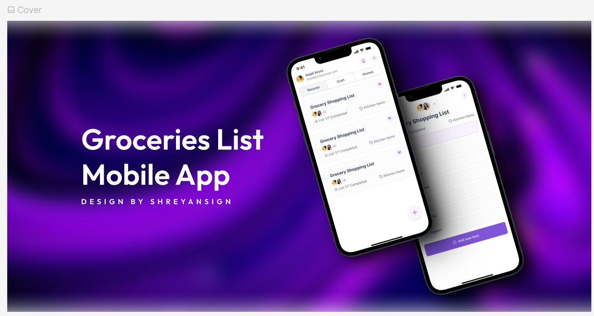
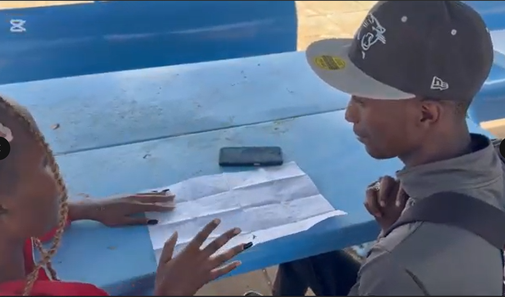
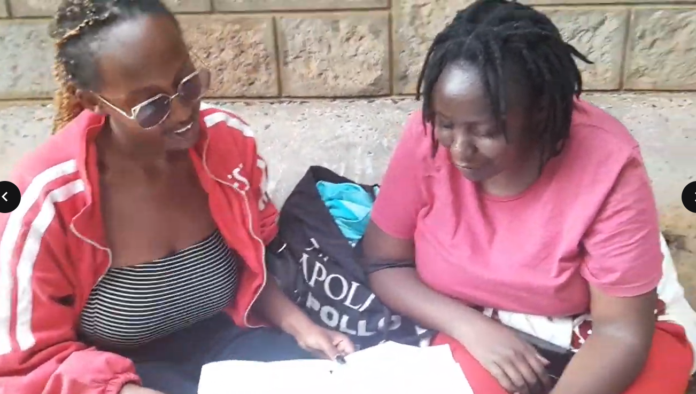
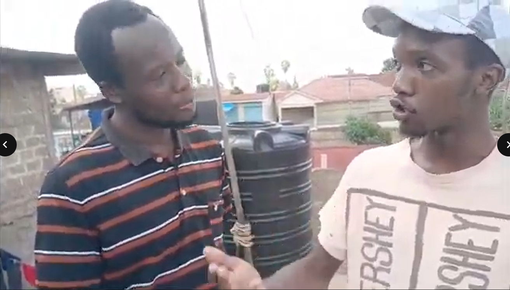
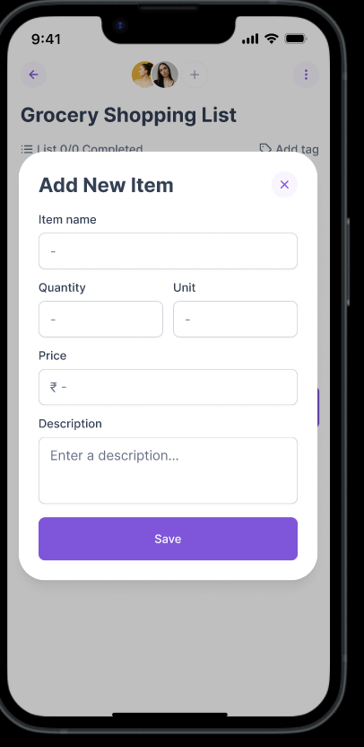
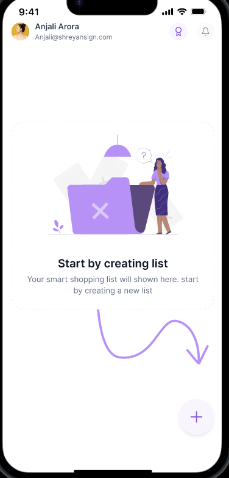
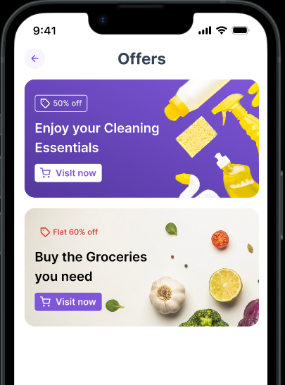

4 Weeks
Project Timeline

A practical shopping companion designed from field research, paper sketches, and a polished Figma prototype. This project focused on making grocery planning faster for users across different age groups and digital comfort levels.
Grocery shopping often becomes stressful when people forget items, cannot track quantities, or share lists inefficiently. The goal of this app was to help users quickly create, organize, and complete grocery lists with less mental load and fewer repeat trips.
Users of different ages manage shopping differently, but they all face one core issue: remembering the right items at the right time. Existing list tools felt either too basic, too cluttered, or not friendly for less tech-confident users.
I conducted interviews with participants from three different age groups to understand behavior, pain points, and comfort with digital tools. Sessions were completed in person using short scenario-based prompts and a follow-up task discussion.
Needed speed, quick add features, and better reminders because they shop between classes and errands.
Needed shared planning, categories, and budget visibility to coordinate family shopping efficiently.
Preferred clarity over complexity: readable text, fewer taps, and a straightforward add-and-check flow.


Before moving to digital UI, I translated interview insights into hand-drawn low-fidelity sketches. This helped me test information architecture and interaction flow quickly before investing in visual polish.




The final interface was designed in Figma with a clean visual system, focused hierarchy, and action-first components. Core flows include list creation, adding item details, tagging, and tracking completion.



The prototype was reviewed against the original pain points from all three age groups. Participants found the flow easier to understand and appreciated the balance between simplicity and feature depth.
Research depth matters more than visual polish in the early phase. Interviewing across age groups revealed that the most inclusive design is often the simplest one. Starting with paper sketches made iteration faster and helped me avoid premature UI decisions.